Contexto
As equipes criativas precisavam consultar diferentes referências e informações de desenvolvimento em um fluxo de trabalho com muitas marcas, produtos e etapas.
2022
Resumo do case
Em 2022, o projeto investigou e prototipou um acervo digital para reunir produtos, referências e informações de desenvolvimento. A solução partiu do processo de criação de coleções e chegou a fluxos, protótipos, testes e um MVP navegável para salvar referências em desktop e mobile.
Meu papel
Pesquisa, conceito, UX/UI, prototipação, testes e documentação.
Problema
O material apresenta a necessidade de pesquisar produtos e coleções, consultar dados e guardar referências em um contexto com várias marcas e etapas de criação.
Entrega
Fluxo de usuário, funcionalidades, wireframes, componentes, protótipo, registros de teste e demonstrações do MVP para desktop e mobile.
O que demonstra
Discovery, síntese de problemas, colaboração, pensamento sistêmico e transformação de hipóteses em uma experiência testável.
Leitura das evidências
As imagens comprovam os artefatos produzidos e os caminhos explorados. O slide de indicadores mostra 621 sessões na quinzena, 2.048 no trimestre e NPS 80; como o material não informa método, base de comparação ou atribuição, esses números são dados a validar, não impacto comprovado.
Sobre
O material do projeto situa o Grupo SOMA como um grupo de marcas de moda com diferentes equipes e coleções. O desafio apresentado não era criar mais uma vitrine, mas apoiar o trabalho interno de pesquisa e desenvolvimento de produtos.
O problema de partida era prático: uma estilista precisava encontrar uma referência, entender seu contexto, salvar o que importava e compartilhar isso com a equipe sem perder o fio do trabalho.
A hipótese foi um acervo digital com busca de produtos e coleções, consulta de informações de desenvolvimento e conversão, criação de pastas, salvamento e compartilhamento.
Função
Pesquisa e síntese
Conceito e fluxo
Interface e protótipo
Teste e análise
Documentação do processo
Leitura do projeto
O projeto explorou uma experiência digital para apoiar equipes de Estilo na busca, organização e compartilhamento de produtos e referências. O foco não era apenas armazenar imagens, mas ajudar a equipe a encontrar repertório e tomar decisões durante o desenvolvimento de coleções.
Contexto
As equipes criativas precisavam consultar diferentes referências e informações de desenvolvimento em um fluxo de trabalho com muitas marcas, produtos e etapas.
Contribuição
Atuei na pesquisa, definição do conceito, interface, prototipação, testes e documentação da solução.
Direção
A experiência foi estruturada em torno de busca, análise, criação de pastas, salvamento e compartilhamento de produtos entre a equipe.
Evidências
O material apresenta fluxos, wireframes, protótipos, telas do MVP e registros de acompanhamento. Métricas visíveis nas imagens ainda precisam de contexto antes de serem tratadas como resultado atribuído ao projeto.
O projeto de ponta a ponta
As etapas abaixo mostram como o problema foi sendo reduzido: primeiro entendemos o contexto, depois organizamos hipóteses, testamos uma estrutura e chegamos a uma experiência navegável.
01 — Contexto
Uma coleção envolve referências, decisões e colaboração. O primeiro artefato ajuda a localizar onde uma ferramenta poderia apoiar a equipe.
Questão: que trabalho estamos tentando tornar mais claro e acessível?
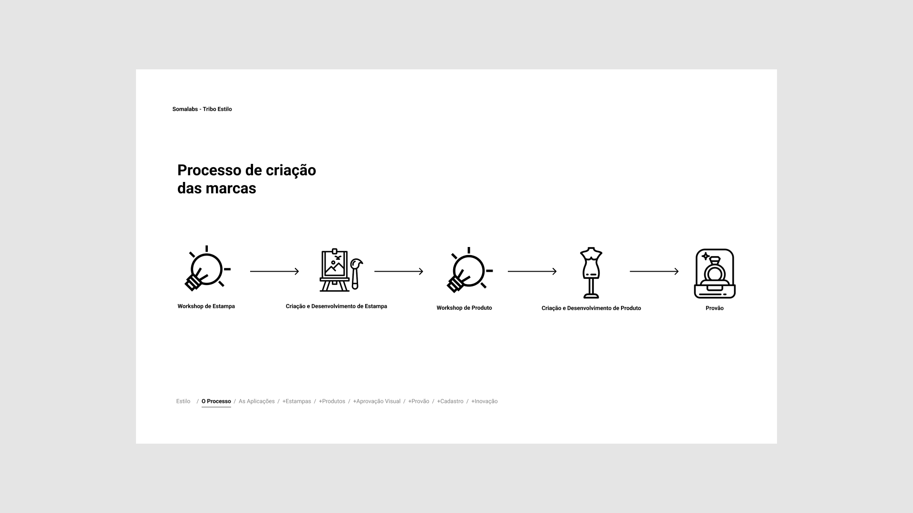
02 — Investigação
A pesquisa organizou o que precisava ser entendido sobre as equipes de Estilo. A proto-persona orientou perguntas e hipóteses, sem substituir a investigação real.
Questão: para quem estamos desenhando e o que essa pessoa precisa conseguir fazer?
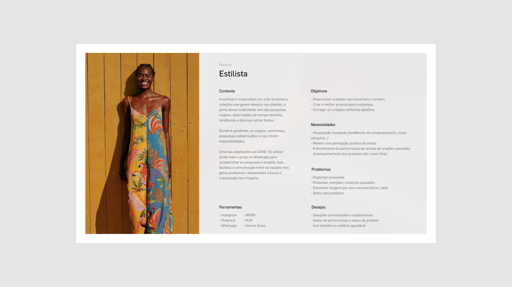
03 — Síntese
As referências e a ideação deslocaram o foco de uma biblioteca de imagens para uma experiência de trabalho: encontrar, entender, salvar e compartilhar uma descoberta.
Questão: qual necessidade merece ser priorizada na primeira versão?
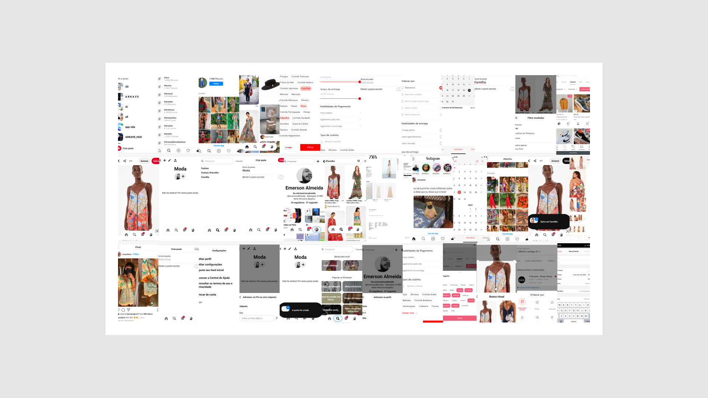
04 — Definição
O fluxo tornou explícita a sequência principal do produto. Cada ação passou a apoiar a próxima decisão da pessoa usuária.
Questão: como a solução se comporta do primeiro contato até o resultado desejado?
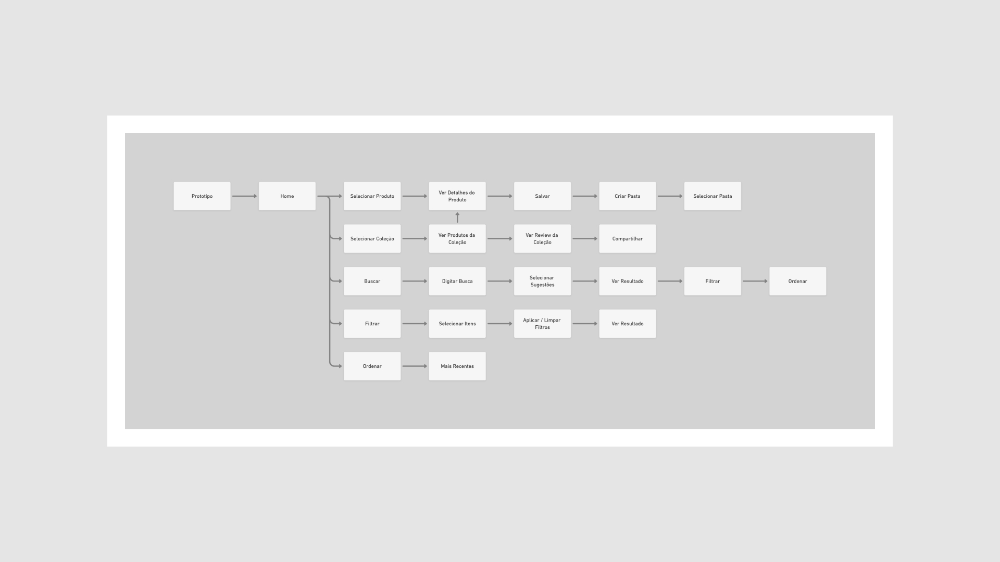
05 — Prototipação
Wireframes, componentes e protótipos permitiram discutir hierarquia, estados e ações com precisão. A interface virou ferramenta de raciocínio e alinhamento.
Questão: conseguimos experimentar a solução antes da implementação?
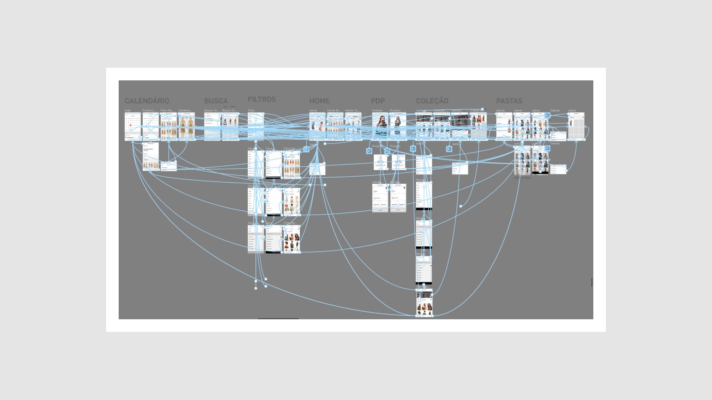
06 — Validação
Os testes buscaram identificar fricções nas ações essenciais: encontrar, consultar e salvar uma referência. A análise mantinha a solução aberta a ajustes.
Questão: o que precisa mudar antes de considerar a experiência pronta?
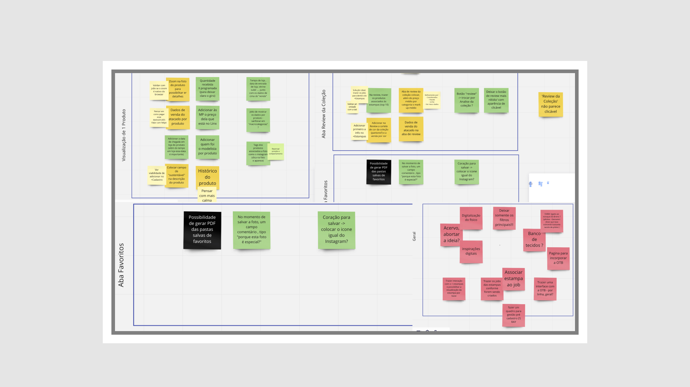
07 — Entrega
O MVP materializou o fluxo em versões mobile e desktop, criando uma base concreta para observar o uso e orientar novas decisões.
Questão: o que foi possível colocar nas mãos das pessoas?
08 — Resultado e próximos aprendizados
O material documenta uma solução que saiu da compreensão do contexto e chegou a um MVP testável. A próxima camada de rigor é conectar o uso real a indicadores com período, método e atribuição claramente registrados.
O que este case demonstra: estruturar problemas ambíguos, conduzir discovery, comunicar decisões por artefatos, colaborar na construção de produto e transformar pesquisa em uma experiência concreta.
Documentação visual completa
A sequência abaixo acompanha o trabalho desde o entendimento do contexto até o MVP, o acompanhamento e os aprendizados. As imagens não são apresentadas como decoração: cada uma responde qual era a pergunta daquela etapa e como ela ajudou a avançar.
01 — Contexto e alinhamento
Esta imagem delimita o sistema em que o produto iria atuar. Ela evita começar pela tela e ajuda a perguntar: em que momento uma pessoa precisa encontrar, comparar ou recuperar uma referência?
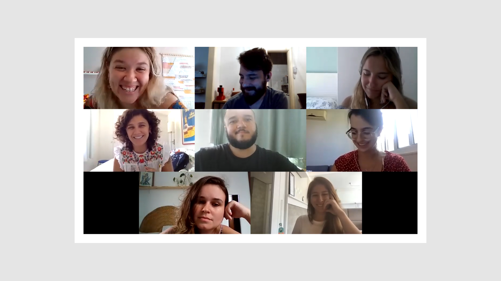
O registro da equipe reforça que o trabalho não foi uma decisão individual de interface. A comunicação com stakeholders e colaboradores fazia parte da construção da solução.
02 — Pesquisa e compreensão
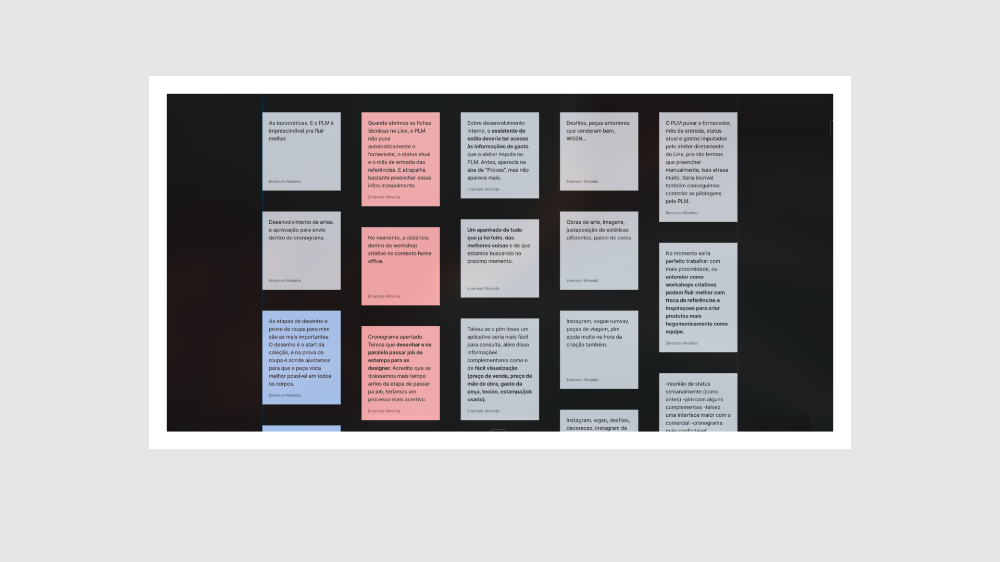
A síntese transforma material disperso em temas que podem ser discutidos. O objetivo não era concluir cedo, mas criar uma base comum para comparar relatos e orientar a ideação.
A proto-persona funcionava como uma hipótese de trabalho. Ela ajudava a tornar a conversa concreta e a formular perguntas, sem substituir a validação com pessoas reais.
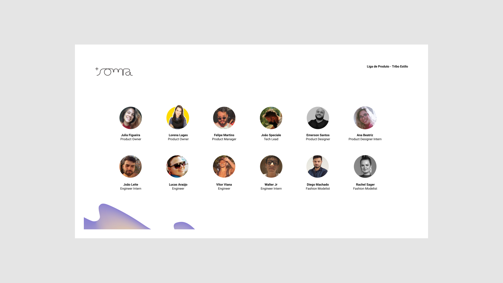
Registrar as pessoas também é registrar a dimensão colaborativa do projeto: diferentes conhecimentos precisavam ser considerados para que a solução fosse útil.
03 — Referências e ideação
O benchmark ajudou a comparar maneiras de pesquisar, visualizar e organizar informação. A intenção foi aprender com padrões existentes, não reproduzir uma solução pronta.
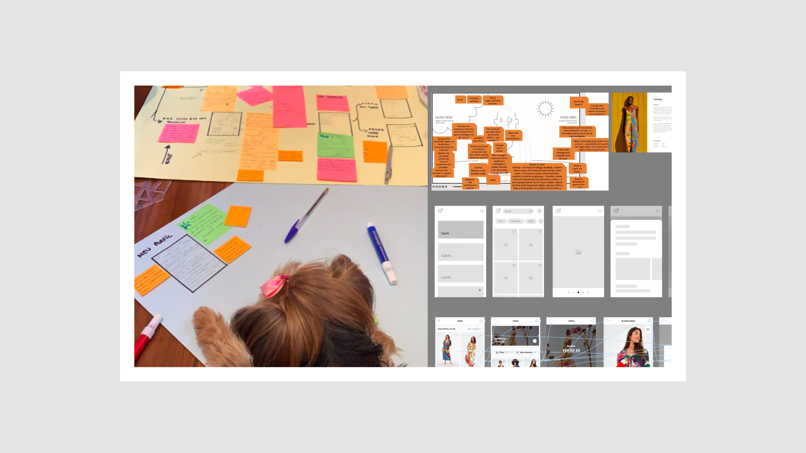
A ideação abriu diferentes caminhos antes da escolha. Esse momento torna visíveis as alternativas e os critérios usados para selecionar o primeiro recorte do produto.
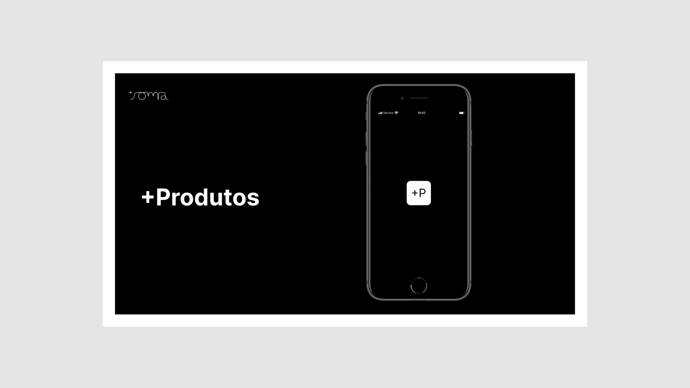
O conceito traduz a intenção do produto em uma primeira experiência. Ele cria uma ponte entre a oportunidade identificada e algo que pode ser discutido, prototipado e testado.
04 — Estrutura e arquitetura
O fluxo conecta ações que poderiam parecer independentes. Essa visão ajuda a avaliar se a solução realmente apoia uma tarefa completa, e não apenas uma tela isolada.
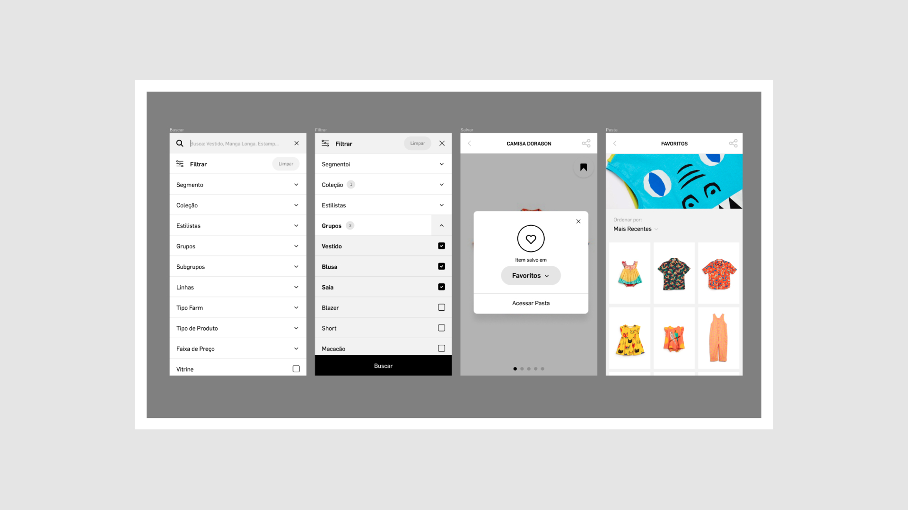
A lista de funcionalidades traduz a oportunidade em um escopo possível. Ela ajuda a separar o que é essencial para testar a hipótese do que pode ficar para uma evolução posterior.
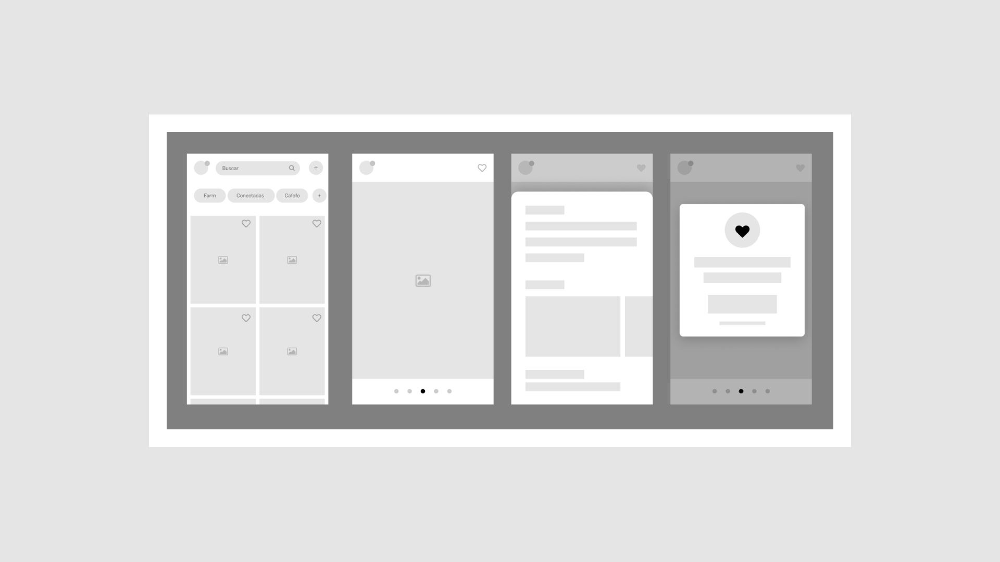
Nos wireframes, a atenção está na organização da informação, nos estados e na sequência das ações. A baixa fidelidade permite mudar a estrutura com menor custo.
05 — Interface e protótipo
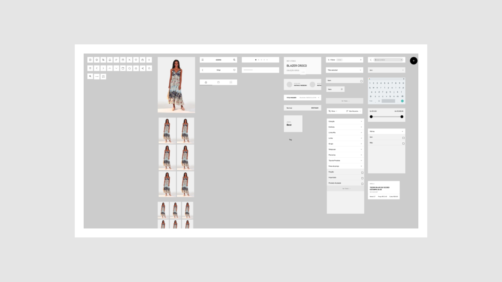
Os componentes reduzem decisões repetidas e ajudam a manter uma experiência coerente. Também tornam mais claro o que precisa ser ajustado quando a hipótese muda.
O protótipo permite testar a lógica do produto como um percurso. Ele é um instrumento de alinhamento entre design, produto e desenvolvimento.
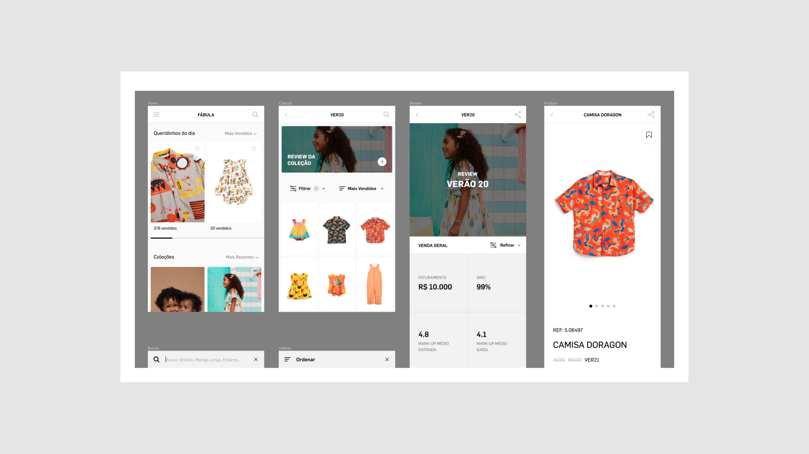
A aplicação ajuda a verificar se a solução continua fazendo sentido quando encontra conteúdo, marca e necessidades específicas de um contexto real.
06 — Teste e iteração
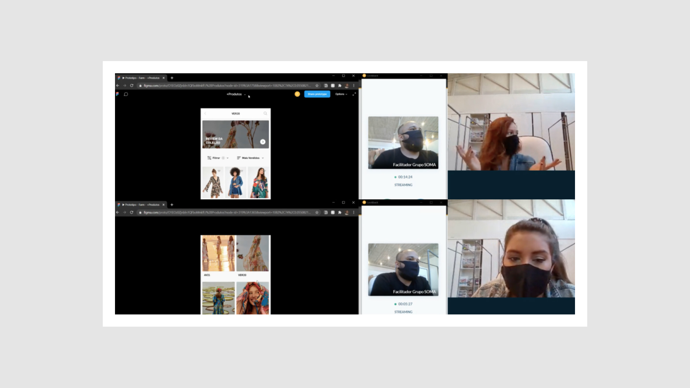
O teste desloca a discussão de “gostamos da tela?” para “a pessoa consegue realizar a tarefa?”. As observações alimentam ajustes na hierarquia, nos rótulos e no fluxo.
Esta análise documenta o raciocínio depois do teste. Ela preserva não só o que foi alterado, mas por que uma mudança passou a ser necessária.
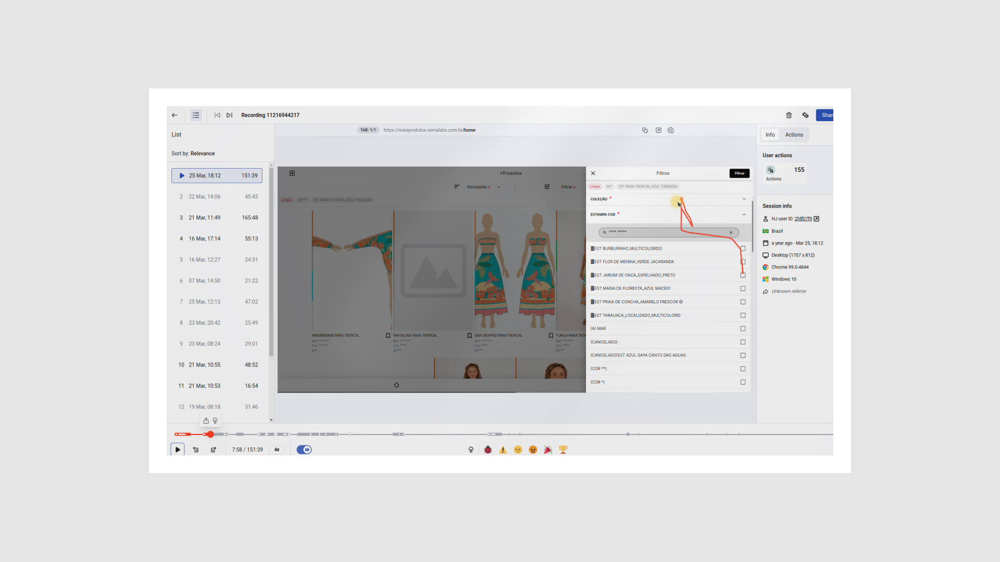
O acompanhamento mostra a continuidade do trabalho depois do primeiro protótipo: observar, conversar, ajustar e manter a solução conectada ao uso.
07 — MVP e evidências
A versão mobile mostra a intenção do produto em uma tela menor e ajuda a observar quais informações e ações são realmente essenciais.
A versão desktop explora uma experiência mais adequada para comparar, organizar e trabalhar com um volume maior de referências.
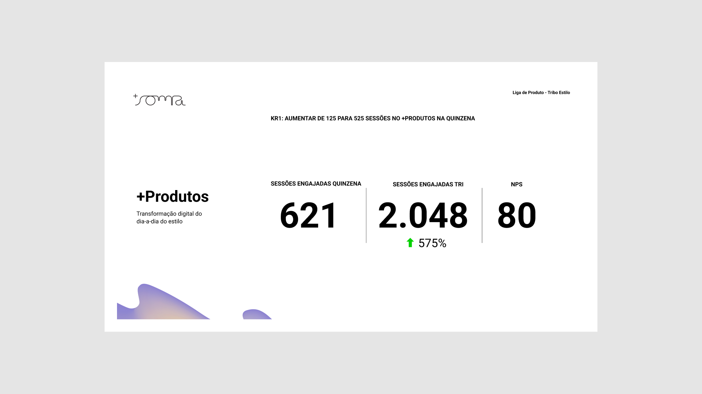
Esses números são registrados como evidência visível no material. Para comunicá-los como resultado atribuído, ainda é necessário confirmar período, método, base de comparação e relação causal com o projeto.
08 — Resultado e aprendizados
O aprendizado final é que o valor não está apenas no acervo ou na interface. Está em criar uma base compartilhada para pesquisar, conversar, decidir e continuar aprendendo.
Este case demonstra: capacidade de estruturar problemas complexos, conduzir discovery, transformar pesquisa em fluxos e protótipos, colaborar com diferentes áreas e comunicar decisões com evidências.
Próximo
Contato